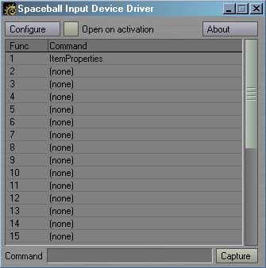

|
To install the Spaceball driver, just follow these steps:
Optionally, while Layout is not running, you can edit your LW3.cfg and add the following line to the beginning of the file: StartupCommand Generic_TM-P_SpaceBallApply--DebugThis will automatically launch the driver every time Layout is run.
Using the Spaceball in Layout
You can activate the Spaceball driver by manually adding the Spaceball master plug-in, or by activating the Spaceball Apply generic plug-in. One activated, the Spaceball will move and rotate the selected items just by moving or rotating the Spaceball. Many options such as the sensitivity and axis locking is handled directly by the Spaceball system driver provided with your hardware. Refer to that documentation for more information on those features. The Spaceball Config generic plug-in can be used to open the system driver's window. The Spaceball can be used to scale items instead of move them by using the Spaceball Move and Spaceball Scale generic plug-ins. Spaceball Move Toggle will switch between Move and Scale each time it is activated.
Enabling and Disabling the Spaceball
You can temporarilly disable the Spaceball using the Spaceball Disable generic plug-in. Spaceball Enable will turn it back on, and Spaceball Toggle will switch between these two states. It is important to note that before Lightwave 7.5, it was impossible to check to see if it was safe to issue commands, such as move and rotate, for a plug-in. This means that it is possible to do very dangerous things like moving an object while Lightwave is rendering. While this is addressed for rendering in 7.5, it is still possible for the Spaceball to issue commands at the wrong time if you're not careful. For example, Lightwave probably won't like it very much if you try to clear an object using one of the Spaceball buttons while it's trying to save the scene. You have been warned. When rendering is started, the Spaceball will automatically be disabled. After rendering in Lightwave 7.5, it will automatically be enabled again. If you are using an older version of Lightwave, you will have to manually re-enable the Spaceball using the Spaceball Enable generic plug-in.
Configuring the Spaceball
Double-clicking the Spaceball plug-in in the Master plug-ins list or activating the Spaceball Properties generic will all you to remap the buttons on the Spaceball to issue commands and scripts. Any command that can be mapped to a key or menu in Lightwave can be attached to a button on the Spaceball.  The Configure button will open up the system driver's window. If Open on activation is checked, this window will automatically open whenever the driver is applied. The list contains all possible buttons that can be remapped on the Spaceball. The function numbers are defined in the system drivers, so be sure to check those. There are two ways to change the command that is mapped to a particular button. After selecting an entry in the list, you can directly type in a new command in the Command field. Alternatively, you can click the Capture button. The next command you execute in Layout will be assigned to this key. After a command is mapped to a function, pushing the button that is mapped to that function will launch that command. Revision History
Bugs? Feature requests? Can't get it to work? Feel free to contact us if you're having any problems or want to request a feature.
All programs presented here are Copyright ©2000-2002 TM Productions, All Rights Reserved. Please contact us if you would like to distribute any of these programs, or if you find any particularly useful. |